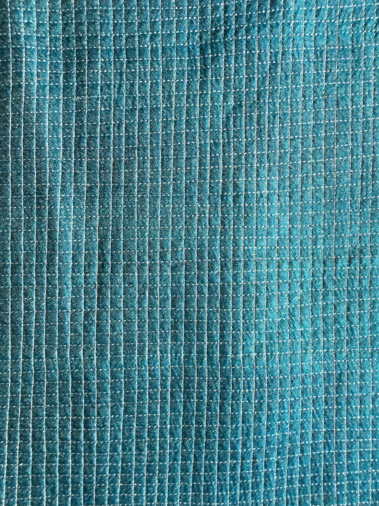
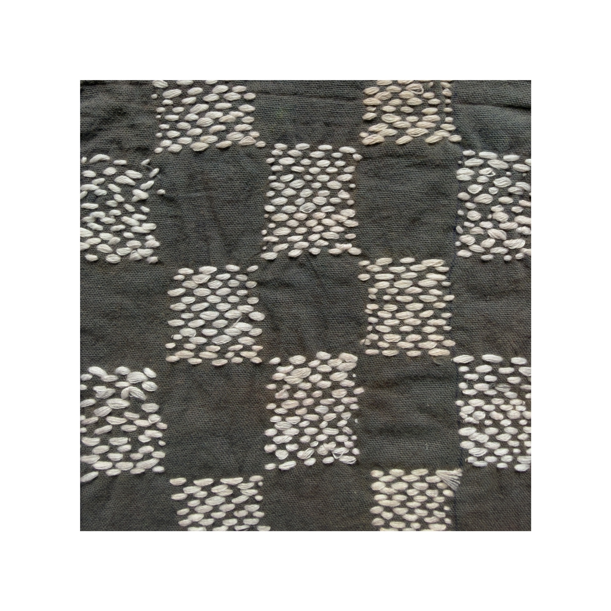
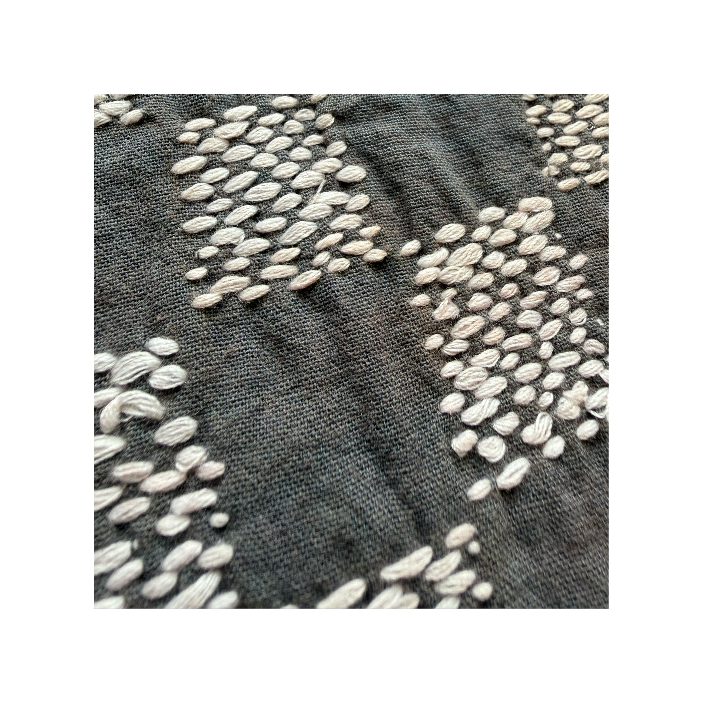
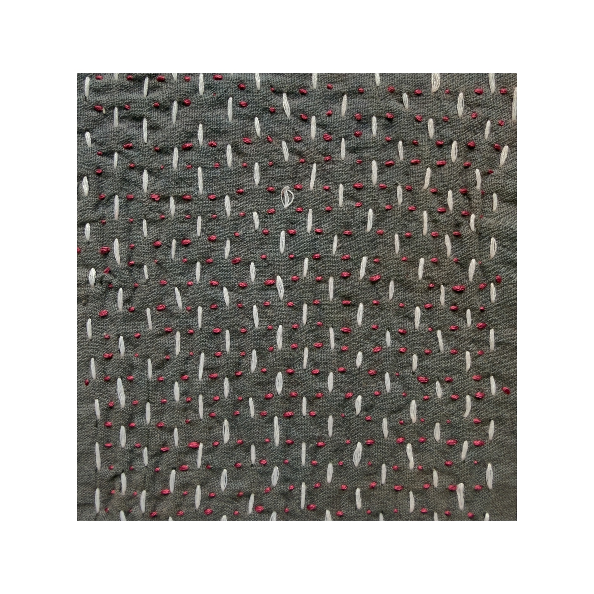
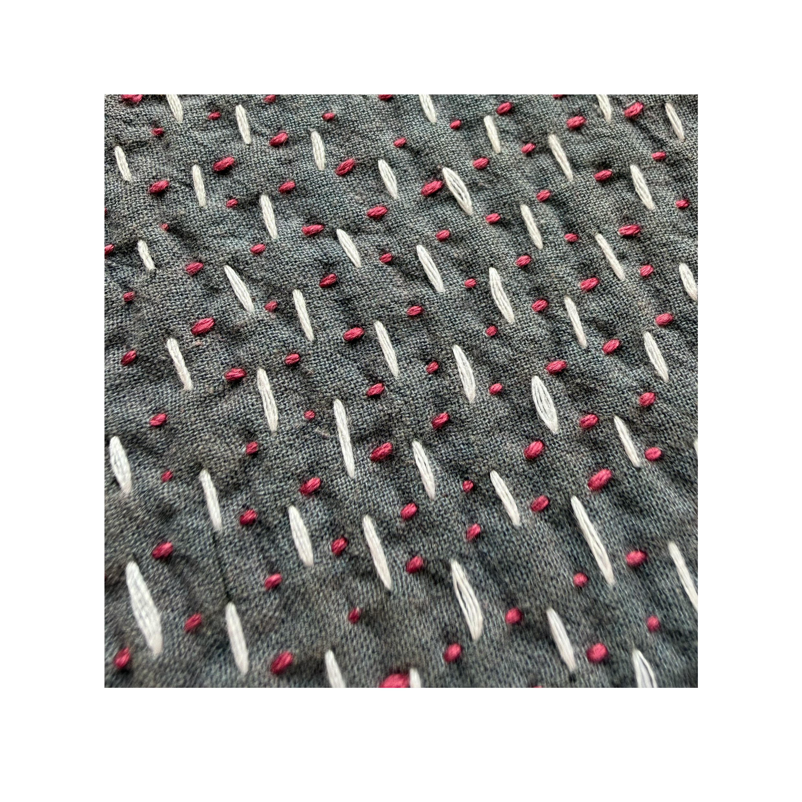
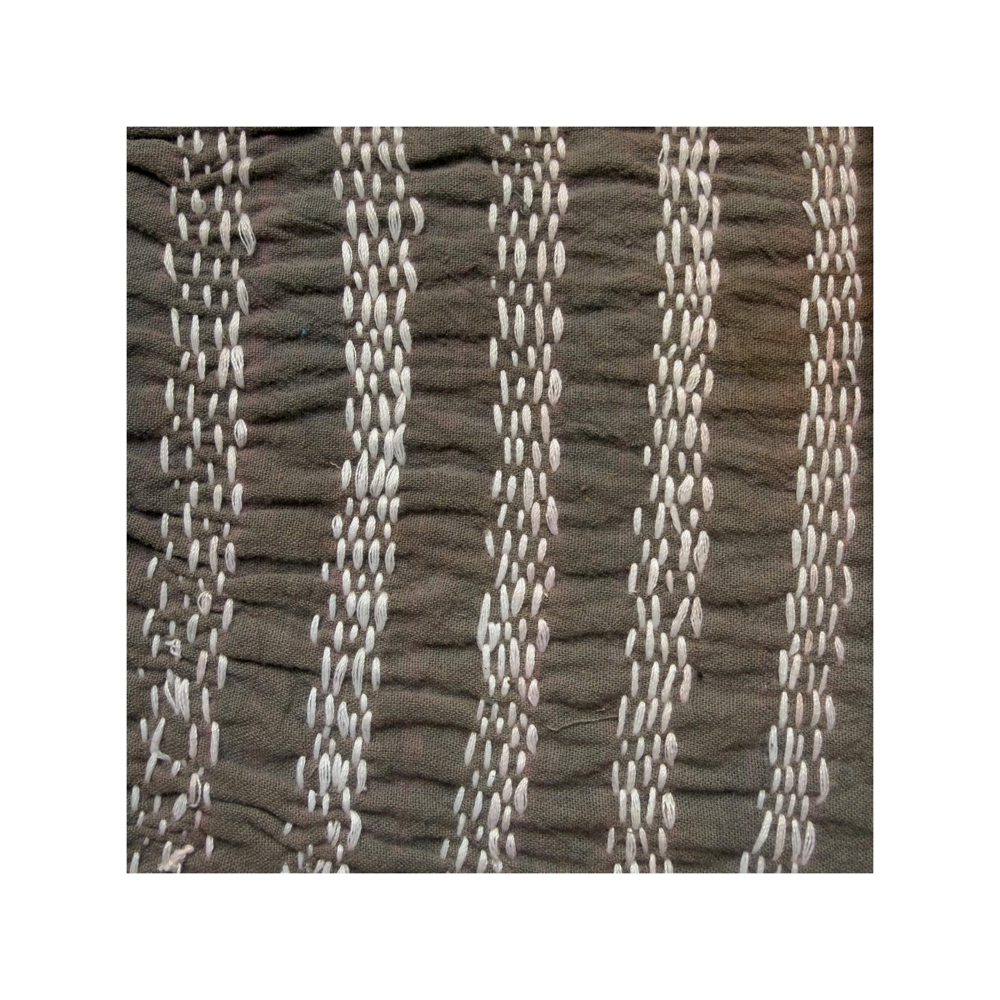
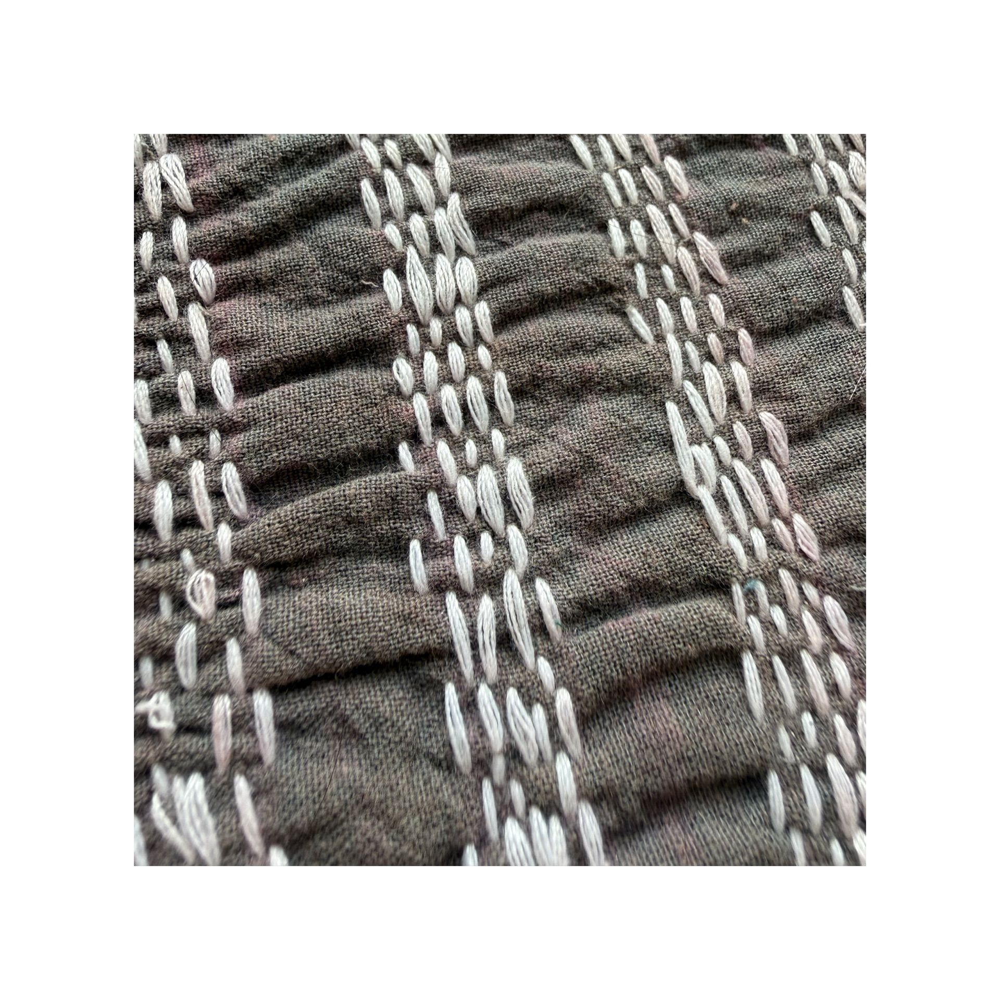

Alma Rachel Ipe
Textile & Apparel Design
National Institute of Design, Andhra Pradesh
almarachelipe@gmail.com | @_rahael___ | almarachelipe.github.io/almarachelipe
The aim of this project was to create a handwoven fabric using Tussar silk that was both aesthetically refined and technically accessible to the weavers of Chittoor — artisans from the Chittoor region of Andhra Pradesh who locally produce Tussar silk. The technique carried forward was the dobby weave concept with a gradual blend of gindle cotton yarn alongside Tussar. The collection was designed using a zero waste pattern.

This project was an exploration of advanced weaving techniques, pushing beyond the basics to understand the more complex and technical possibilities of the loom. The inspiration was drawn from the blue damselfly. The final sample was executed using the wadded double cloth weaving technique with zari threads incorporated to capture the signature shimmer and iridescence of the damselfly.
This project was an introduction to the fundamentals of weaving. The colour palette of the plum headed parakeet — its greens, pinks and purples — was used to derive a stripe rhythm which then became the foundation for exploring different basic weave structures, translating the essence of the bird into woven form.
This project was an exploration of fabric construction techniques, investigating how different fabrics and methods of manipulation can be combined to evoke a specific visual and tactile quality. The blue damselfly served as the creative inspiration — its signature iridescence, delicacy and translucency becoming the benchmark against which every fabric and technique choice was measured.


This project was an exploration of the running stitch — one of the most fundamental stitches in embroidery — focusing on the many ways in which a single, simple stitch can be manipulated to create varied and unexpected surface textures. Rather than working with complex stitch vocabulary, the focus was entirely on understanding the creative potential that lies within repetition, direction, density and scale of one stitch.






This project involved the construction of a cotton cocktail dress, bringing together multiple design and technical elements into a single garment. The dress features a princess cut silhouette, a front cowl neck, a deep back neck and a subtle ikat print detail at the hem. For the photoshoot the dress was shot in the workshop where it was made — a deliberate choice that quietly celebrates the craft and skill behind the garment.
This course was an exploration of visual communication and layout design. Three key exercises were undertaken — designing an editorial magazine cover, redesigning a movie poster using only typography, and creating a visiting card for a hypothetical brand.